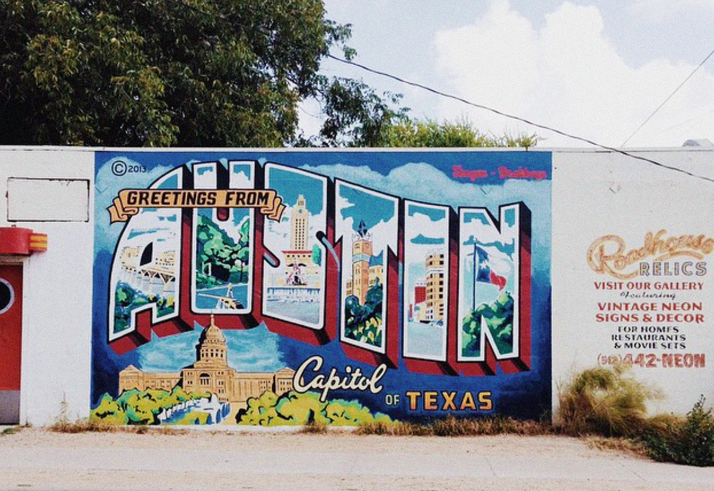

The top 9 things to do for first-timers in Austin, Texas

There are some cities that are worth seeing because of the sights, and others worth visiting because of the food. But the best cities have both and Austin is one of those special places. Everytime I visit Austin I see another side to the city I didn't realize existed, and I'm sure I will continue to learn on subsequent trips. But in the meantime, here's a list of the things I *wish* I knew about the first time I visited:
Around a thirty minute drive outside of Austin you’ll find Hamilton Pool: the beautiful result of erosion and a collapsed grotto. The pool is open to the public and swimming is allowed (and encouraged!) exempting any bad weather. I’d recommend going on a weekday because it can get crowded (you may even have to wait in line) on weekends. Keep in mind that while it is a pool, there are no lifeguards on duty so swim at your own risk. The entrance fee is $15 per vehicle with discounts for senior citizens and disabled vets.
If you don’t have a car or don’t want to make the trek to Hamilton Pool, Austin also has another natural spring pool right within city limits: Barton Springs. With an average temperature of 68-70 degrees, Barton Springs is ideal for swimming year round. The pool is open daily with lifeguard supervision during popular hours. Admission is $8 for most non-residents but discounted for children and seniors.
The best of Texas barbecue
You may be familiar with the fact that each southern state has its own twist on barbecue, or a style that makes it unique. For Texas, it’s the fact that we prefer beef or pork: brisket, to be exact. While Franklin’s is undeniably the most famous game in town, you could be waiting in line up to three hours to get some of the low and slow goodness. We recommend checking out La Barbecue instead: the joint was started by the daughter of a Texas barbecue legacy. If you get there before opening hours you’ll likely only (only!) have to wait one hour instead of three.
Night clubs aren’t really my scene anymore but Barbarella’s is different, ok? Maybe that’s just the New Yorker in me talking because I’m not used to bars or spaces that are so… big. Drinking and dancing at Barbarella’s is more like going to a house party that’s actually fun than being at a pretentious club, and with many different rooms at your disposal it’s easy not to get bored. Plus they seem to know my biggest weakness: nostalgic pop music.
Photo by @barbarellaaustin
A failed condo-development reborn as a public art gallery thanks to Shepard Fairey. There are so many details to uncover and explore throughout the ground’s skeleton walls and levels. Climbing to the top will also give you a wonderful view of the downtown. Check out some free art and get a colorful new profile picture while you’re at it.
Rainey Street
If you’re the collegiate crowd that takes over East 6th street at night isn’t your scene but you still want a chill place to have a drink, check out Rainey Street. It’s an adorable little street of old homes that were converted into bars, live music venues, and also a popular parking spot for many food trucks. The crowd tends to be young professionals. Some of our favorite spots on the street are Javelina, BlackHeart, The Container Bar, and Bungalow. Also be sure to check out the whimsical Indian restaurant: G’raj Mahal.
Photo by @javelinabar and @grajmahalaustin
Breakfast Tacos
What’s a trip to Austin without eating at least one breakfast taco, aka the best breakfast ever. If you’re not familiar, it’s exactly what you think it is: a taco filled with egg, cheese, and bacon for meat-eaters or potatoes and avocado for vegetarians. Our favorite places in Austin to eat breakfast tacos are TacoDeli and Juan in Million, but you can’t go wrong with any of the unnamed taco trucks parked around town either. If you’re willing to drive 30 minutes out of town, there’s a special little truck called “Grandpa’s Tacos” run by an adorable older couple on the side of the highway near Lake Travis that’s worth a stop.
From March through October, every night just before sundown, over 1.5 million Mexican free-tailed bats fly out from under the South Congress bridge in a giant swarm that’s unlike anything I’ve ever seen before. Yes, you’re going to look like a clichéd tourist standing on the South Congress bridge waiting for nearly an hour but suck it up because nature is cool and it’s worth seeing at least once in your life. Plus it’s free.
Photo by bmendez68
Restaurants
I could probably make a separate list just dedicated to places to eat in Austin, there are so many. Some of the more memorable places we’ve eaten that I’d highly recommend checking out: Elizabeth St. Cafe for Vietnamese food, Ramen Tatsu-ya for Japanese, Chi’lantro for Korean/Tex-Mex fusion, Hopdoddy, Tamale House East, Salt & Time, and Odd Duck for a fancy meal.
Additional Notes
We highly recommend renting a car in order to fully experience everything has to offer. If you plan on staying inside the city limits you could very well get by with ride-sharing apps, but if you’re interested in checking out some of the incredible nature outside of the city, rent a car! Read more about our recommendations on where to stay in Austin here.